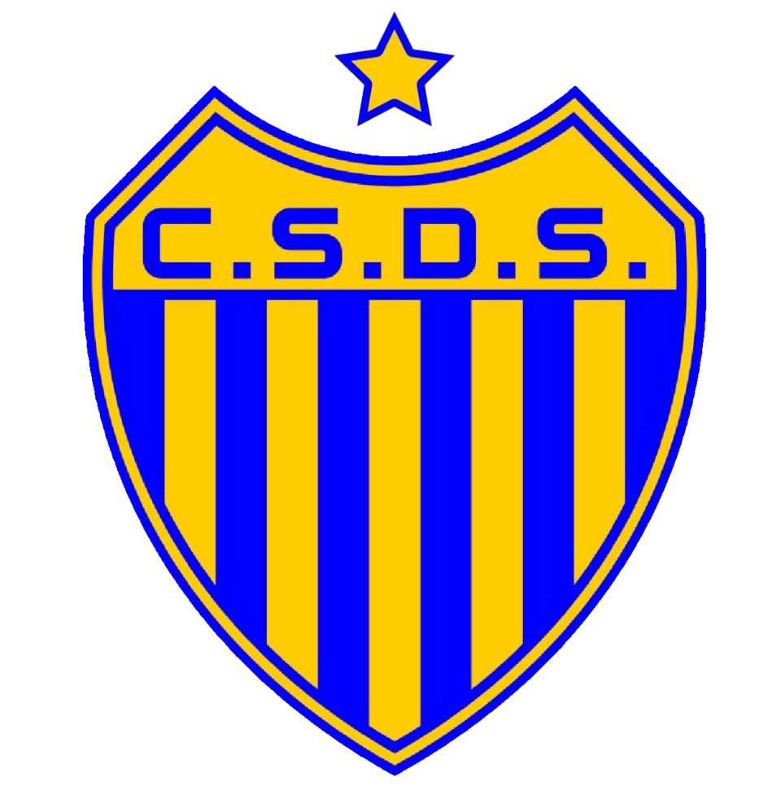
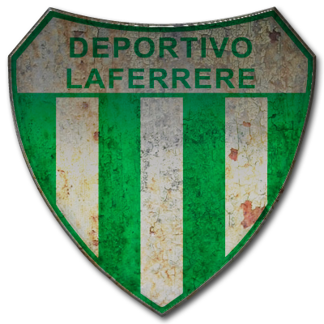

A fines de la década del 40 y principios del 50 el deporte está en pleno auge y permite el nacimiento de muchos clubes, Deportivo Merlo, General Lamadrid, Sacachispas, Fénix, Ferrocarril Urquiza y Juventud Unida. Laferrere ve crecer instituciones como Glorias Argentinas, Vicente López, Alumni, 25 de mayo y Liverpool, surgidas entre 1949 y 1955.
Los pobladores de la zona expresan su deseo de formar un equipo de fútbol. El grupo integrado entre otros por José y Antonio Parisi, Roque Leoncini, Américo Vigas, Ismael Etcheverry, Javier Paniagua, Antonio Narciso, Alejandro Cruz, Francisco Biafora, Quico Robledo, Juan Carlos Enríquez, Hugo Valdez y el “Nene” Ortiz se ponen de acuerdo, pero resta definir el color de la camiseta. Punto de conflicto, porque cada uno pretende que el nuevo club adopte los colores de su favorito. Para evitar roces, se resuelve que sean los mayores los que aporten la solución.
Luego de varias reuniones sin acuerdo, se le encarga a la suerte la decisión y se procede a un sorteo, aportando cada uno el nombre de su institución preferida. Resulta ganador José Parisi (Independiente).
Salvado el problema de los colores, ellos mismos disponen los fondos para comprar las camisetas. Cada uno cuida la suya y en señal de guerra la lleva atada a la cabeza para los partidos desafío (nunca juegan torneo oficiales).
En 1956 comienzan a jugar diariamente en los terrenos que circundan las calles donde hoy se ubica la cancha. El equipo es “Independiente”,por el rojo de Avellaneda y alarga las noches del café que Jacobo Neyman tiene en Magnasco y Rocha (hoy Rodney) germinando la idea de intervenir en la Liga barrial Laferrerista. Posteriormente adoptaría sus colores definitivos verde y Blanco. Para ponerle la firma a tanta intención, se comisiona a Deolegario Velasco. Allí surge la necesidad de formalizar una institución con sede que avale sus actos.
Tras varios debates en la carnicería que Ismael Etcheverry tiene en Coronel Isleños y Santa Catalina (hoy Obligado) y otras en la carbonería de Manuel Valdez, el 9 de julio de 1956 nace el CLUB SOCIAL Y CULTURAL SPORTIVO LAFERRERE.
La eleccion de la sede
La adquisición del terreno (donde actualmente se ubica la sede) no fue tarea fácil, teniendo en cuenta la nula posibilidad económica de los muchachos. Aparece entonces en escena don Pedro Bistolfi, hombre de negocios de la época que realizaba operaciones con cheque frecuentemente. Ofrece pagar con valores a un plazo determinado, y de esta manera, lograr algo de oxígeno para la devolución del dinero. Se adquieren los terrenos y en un esfuerzo descomunal, se junta el monto que alcanza para cubrir ese cheque sin fondos. El primer paso se había dado.
El Sr. Vanderper (hermano de Héctor “Delacha”) trabajaba en la firma Borgward, ubicada sobre la calle Marconi, a pocas cuadras de la Ruta Nacional N.º3 en Isidro Casanova. Fue este señor quien inició los contactos con dicha empresa, para conseguir dos enormes cajones de madera. Vale aclarar que en aquel entonces los automóviles que llegaban al país, lo hacían embalados de esa manera. Así se construyen la casilla, mesas y bancos de la flamante sede. La primera sede construida con maderas con estos materiales que consiguieron en la Borgward.
La primera comision directiva
Cuando se reúne el grupo para fundar el club, se nombra a don Deolegario Velazco como Presidente de esa Asamblea, pero no consta en Actas como presidente de la institución. La que aparece como primera Comisión Directiva figura en los libros de 1958 y fue presidida por don Ángel Alcaraz. El Vicepresidente, Deolegario Velazco. El resto de los cargos se distribuyó de la siguiente manera: Secretario, Facundo Quiroga; Prosecretario, Pedro Bistolfi; Tesorero, Alfonso Enríquez; Protesorero, Manuel Valdez; Vocales, Rufino Duete, Carlos y Domingo Bonano; y como Revisores de cuenta, Domingo Aquino y José González.
El nombre
La reunión cumbre para nuestro nacimiento se efectuó el 20 de junio de 1956. Allí se fijó como fecha de fundación el 9 de julio de ese mismo año. Como siempre, cada resolución era minuciosamente estudiada. La designación del nombre del club, no podía ser la excepción. En un primer momento se sugiere el nombre “20 de junio”, por ser la fecha de dicha reunión, pero tal idea fue desechada, hasta que se planteó que la entidad por nacer debía llevar un nombre que sea representativo del barrio de origen. La influencia de residentes en la zona hizo el resto y fue así que la primera denominación fue: Sportivo Laferrere.
En 1978, con motivo de la inscripción en A.F.A. se adoptó la nueva denominación: Club Social y Cultural Deportivo Laferrere.

Escudo de Dock Sud

Antiguo escudo de LaferrereEscudo de Laferrere
Como se creo el escudo
El primer escudo de Laferrere se habia basado directamente en el de Dock Sud, es apenas en 2013 que se remodela el escudo del club para dejar atras el anterior simbolo y poder crear algo totalmente propio
Profesionalismo (1978 a la actualidad)
En el plano futbolístico, antes de su ingreso a la AFA, el “Verde” había sido campeón de la liga barrial Laferrerense en 1962, en 1965 y 1975. Luego pasaron ascensos, descensos y una quiebra que casi lo deja al borde del abismo.
1978 – El Club Social, Cultural y Deportivo Laferrere debuta por torneos de A.F.A. el 11 de marzo contra Victoriano Arenas, haciendo de local en cancha de la liga (Freire y Santa Rosa). ¿El resultado? Victoria “Villera” con dos goles de Luna y Córdoba. El técnico fue Marcelino Perón.
1980 – El año de la “Topadora”. Se arrancó con todo: goleada a al por entonces club Belgrano (hoy Lugano) por 11 a 0 y 9 a 1 al desaparecido Club Piraña. El técnico era Héctor Rama.
1983 – ¿Alguna vez te preguntaste por qué “Lafe” y Luján son tan amigos? Cuenta la leyenda que por el torneo de Primera D de ese año, el equipo, dirigido por José Argerich, clasifica para la rueda final por el ascenso a la “C”. En semifinal, se enfrenta al equipo de la Basílica, quien termina rendido por la magia del “Flaco” Luis Chamorro (goleador de esa campaña con 16 conquistas) y accede a las finales contra Lamadrid. Luego del partido, la institución que posee camiseta parecida a la de River Plate, le obsequia una imagen de la virgen de Luján a sus pares matanceros, y así nació la leyenda…
1985 – “Lafe” hace una campaña de menor a mayor de la mano de los hermanos Costoya, al llegar a las finales con Leandro N. Alem en cancha de All Boys. Durante esa temporada, Daniel De Felice convirtió, siendo volante central, ¡ocho goles! en dos partidos consecutivos, alcanzando un récord inigualado hasta la actualidad “villera”.
1986 – Por las reestructuración de los torneos de la A.F.A. se disputa un torneo que da seis ascensos a la “C”. El “Verde”, luego de una campaña impresionante con invicto incluido, da la vuelta olímpica en cancha de Almirante Brown, luego de un contundente 3 a 0 a Luján.
1986/1987 – El Deportivo, con las incorporaciones de Juan Carlos “La Araña” Maciel y José Luis “El Pescado” Arce, asciende a la Primera B luego de armarse para mantener la categoría. En la última fecha, le gana a Argentino de Merlo 1 a 0 con un exquisito tanto del nombrado goleador.
1988/89 – Luego de una temporada que casi lo lleva a descender, José Argerich armó dupla técnica con José “El Gordo” Ghiso y, en el marco de un equipazo con el “Beto” Pascutti y Landaburo como estandartes, se queda afuera de las semifinales del Zonal por penales ante Atlético de Rafaela.
1989/90 – En cancha de Huracán y con “Pedrito” González en el banco, “Lafe” logra un hito en el fútbol argentino al ascender tres categorías en cinco años: “El Tanque” Borzillo, “El Polaco” Zielinki y “El Tano” De Giuli dan la vuelta olímpica y llenan de alegría al pueblo Villero .
1992/93 – Con la llegada del “Potro” Domínguez, “Lalo” Maradona y el “Topolino” Riquelme, el “Verde”, en una campaña irregular con muchos empates (18) le gana a Quilmes con gol de Pozzutto, quien luego ascendería a Primera con un dato de color: ese día cambió la tradicional casaca a bastones verticales verdiblanca por una azul y amarilla.
1993/94 – Debuta José Luis “Garrafa” Sánchez en la Primera de “Lafe”. Lo hace como lateral por la izquierda en un equipo donde se destacaban “El Panza” Videla y “Lucho” Malvárez. Obtiene su primer auspiciante en la camiseta: Seguros Inca.
1994/95 – “Lafe” desciende por primera vez en su historia. Diego Armando Maradona se acerca al club para llevar adelante un proyecto futbolístico muy ambicioso que no prosperó. Recibe 82 goles en 42 partidos, ganando solo cinco partidos.
1996/97 – De la mano de “Garrafa” -goleador junto a Jorge Torres con once tantos- se clasifica al viejo Octogonal clasificatorio por una plaza en la B Nacional. Pierde con el “Porve” muy cerca del objetivo.
1998/99 – El club entra en quiebra y padece su segundo descenso. 34 partidos jugados: ganó cinco, empató once y perdió 18. Recibió 65 goles y solo pudo anotar 43. Gustavo González fue el máximo artillero con siete conquistas. Debuta Ariel “El Chino” Cafferata.
2001/02 – Con Sergio Quiroga como técnico, “Lafe” vence a Colegiales y vuelve a la Primera B: gana 21 partidos, anota 64 goles y le convierten 35. “El Canario” Blanco lidera la tabla de presencias con 36 y Marcelo Rufini es el goleador con 16.
2003/04 – Récord de expulsiones en torneos cortos: 18 en 21 partidos.
2004/05 – La peor campaña en Primera B: solo se ganan dos partidos en el Clausura. “El Chino” juega 36 partidos y de milagro se salva de descender.
2005/06 – Pierde la categoría por tercera vez frente a Deportivo Español, justo en el año que cumple sus primeros 50 años de vida.
2007/08 – Luego de una campaña irregular y de ubicarse en la decimocuarta posición, “El Tano” De Giuli se aleja de la dirección técnica, dejándole la posta al “Loco” Santorelli, quien arrasa en la segunda parte del torneo llegando a estar a solo una unidad del puntero (Colegiales), obteniendo más del 70 por ciento de los puntos. Gabriel Garcete marca 20 goles a lo largo del campeonato y se convierte en el único jugador en la historia de “Lafe” en alcanzar esa suma.
2009 – Actualmente el club continúa creciendo. Con proyectos para mejorar el polideportivo que se ubica en la Ruta N.º 21. El plantel se encuentra de pretemporada en San Clemente del Tuyú, bajo las órdenes del técnico Oscar Martínez, preparando lo que todo el pueblo “Villero” anhela: el ascenso.
2012/13 –Su Dt. Vicente Stagliano dirigió hasta la fecha, dejando al equipo en una aceptable posición, asume el cargo Rodolfo Della Picca, quien luego de una seguidilla de empates entra al reducido. Lafe quedó eliminado luego de perder con Fénix 3 a 0.
2013/14 – Con la llegada de su nuevo DT. Eduardo “Mechón” Cáceres, el plantel se va nutriendo de nuevos jugadores, con los retornos de Pablo Nieva y Jorge Blanco. Acuciado por malos resultados, renuncia en la novena fecha y es reemplazado por Sergio "Chinchu" Quiroga. En la primera rueda Lafe realizó una pobre actuación. En la fecha 14 obtiene su primer triunfo, de 19 partidos, ganó 3, empató 8 y perdió 8. Sobre un total de 57 pts. obtuvo solo 17 pts. Lamentablemente se produce en ese tiempo el fallecimiento de Héctor Sanabría (se desvaneció en pleno campo de juego) y como homenaje póstumo la tribuna lateral izquierda del estadio lleva su nombre.
2013/14/15 –Ya con Gabriel Guzmán como presidente, se volvió a apelar al Chinchu Quiroga. Bajo su conducción, Lafe sufrió una eliminación en semifinales del Octogonal frente a Español y, en la 2013/2014, no se clasificó al Reducido del minitorneo de 2014. De igual manera, dirigió al equipo en el torneo anual de 2015, logrando un tercer puesto llegando a las semifinales, donde es eliminado por Central Córdoba de Rosario.
2016/17 – Un hombre de la casa como Juan Alvariño toma las riendas del plantel sorprendiendo en la Edición 2015-16 de la Copa Argentina eliminando a Argentinos Juniors por penales, luego de empatar 1-1 en los 90´ con una gran actuación del arquero Leandro García, equipo que presentaba a su entrenador Gabriel Heinze. Tras un discreto sexto puesto en el minitorneo de 2016, presentaba la renuncia, por malos resultados, en la octava fecha del torneo 2016/17.
2016/17/18 – Llega Salvador Pasini y el Villero terminaba en la decimoctava ubicación de la tabla. Pese a la irregular campaña, fue ratificado para la 2017/2018, pero tras once jornadas, el Tano fue cesado de sus funciones. Entonces se buscó a Norberto D´Angelo, que venía de ascender con Sacachispas a la B, debutando en las últimas fechas de la primera rueda.
2018/19 – El equipo con D´Angelo se clasificó al Reducido. Sin embargo, el DT dio el portazo, por lo que Lafe superó a Deportivo Merlo en cuartos de final y, luego, fue eliminado por Excursionistas, durante el interinato del Flaco Esquivel Chamorro.
2019/2020 – Asume junto con una importante reestructuración del equipo César Monasterio, ex arquero de gran paso en el club y teniendo la experiencia de ascender a Barracas Central como ayudante técnico. Hace una campaña de "campeón" en la primera rueda pero termina perdiendo en un mano a mano con Cañuelas hasta la última fecha (solo con 2 puntos de diferencia), privándolo de la plaza de campeones en el formato de Apertura y Clausura que definía el primer ascenso. El 4 de marzo se produce el enfrentamiento por los treintadosavos de final de la Copa Argentina 2019-20 contra Estudiantes de la Plata, resultando en otra noche mágica donde el equipo le planta cara a un gigante de la primera división, llevando a los penales con empate a un gol hecho por el juvenil Agustín Faillace luego de una asistencia exquisita de Nicolás Ríos. En la tanda de penales, la paridad del marcador es rota por el mundialista Javier Mascherano mandando su remate arriba del arco desatando la alegría de más de 10 mil almas que coparon la popular visitante del estadio Ciudad de Lanús. La segunda rueda solo dura hasta la novena jornada por efecto de la cuarentena obligatoria al Covid-19 deteniendo toda actividad deportiva momentáneamente y al final se opta concluir la temporada. Se destaca que termina el Deportivo Laferrere como primero de la tabla anual a esa fecha. César Monasterio deja el cargo por no llegar a un acuerdo con la dirigencia.
2020/2022 – Con la normalización de la actividad y con un formato creado para definir los ascensos, el plantel es dirigido por Fabián Zermatten, perdiendo en el debut contra Lamadrid pero en la siguiente fecha logra un descollante triunfo contra Cañuelas por 5-4 de visitante. El no poder luchar en los puestos de honor luego de una parda en cero contra Argentino de Merlo y una derrota contra Dock Sud determinaron la salida de Zermatten. Se contrató a Mario Finarolli para afrontar la etapa del reducido en busca del segundo ascenso, pero caería por penales luego de empatar 2-2 contra General Lamadrid.
2023 – De la mano de Guillermo Szeszurak, logró el ascenso a la Primera B después de su última participación en la temporada 2005-06. Racha negativa de partidos consecutivos sin victorias, peor segunda racha de la historia del fútbol argentino 31 partidos sin ganar.